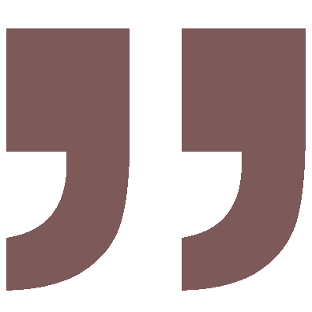

Hello! I am
Ryan Pantaleon
and I am a freelance photographer who established
Stills by August
based in Laguna.
My love for photography began at a young age when I was only using cellphone camera.
I have honed my skills and developed a unique style that captures the essence and beauty of my subjects.
Whether it's a wedding, debut, or any event coverage, My goal is immersing life within a stills that tell a story and evoke emotions.
I believe that photography is not just about taking pictures, it's about capturing moments and preserving memories that will last a lifetime.
Let us help you capture your special moments through stills and hues and turn them into treasured memories.
Isa lang to sa maga'gandang pitik ni Sir Ryan during our prenup shoot.
Burst out na ako that time kasi ang lakas ng ulan but thank God he send's us not ONE
but TWO people na sobrang babait during shoot, kahit umulan pa,
malubog sa putik ready mabasa at madumihan mabigyan lang kami ng magandang kuha
kahit medyo ginabi na kami, and hindi nga kami nag kamali ang gaganda ng photos.
Ang gaan din nila kasama hindi mo mararamdaman yung hiya, Highly Recommended 💯
- Maydirence Carrascal Taiño

EXPERIENCE???
SOLID!!!
ganyan kami magtiwala sa KUMUKUHA ng IMAHE ng bawat espesyal na araw ng aming BUHAY😍😍
KUMUKUHA??IMAHE?? BUHAY??💪🏻💪🏻
Ganyan nila pinahahalagahan ang bawat Click ng Camera na ngpapakita ang Ngiti sa aming mata🤩🤩
GOODS NA GOODS!! QUALITY SHOTS📸📸
mababait na artist💯💯💯
THANKYOU @Stills By August👌👌👌
sa mga kaibigan kapamilya jan 101% SULIT😇😇
- Runel Gonzales
HIGHLY RECOMMENDED.
We didn't expect na magiging ganun kaganda ung video and enhanced photos
during our prenup since maulan at masama ang panahon during that time.
They did a great job as they gave us unexpected result of the final output.
Napakagaan nyo po ktrabaho. Maraming maraming salamat sa inyo 😍
- Antonette Izar
Kudos to this team! 🤩 Tahimik lang magtrabaho pero BOOM!! 🥳🥳
Thank you so much Sir Ryan and team. 🤍🤍
We really appreciate your hardwork and passion.
Super ganda and love namin ng SDE 😍
More power and more clients!! 🤩🥳
- Cham Pascual
kudos to this team.
grabe solid nun shoot parang mag-ttropa lang sa Kanto. hahaha 🤣🤣🤣
it's really nice and amazing working these team.
Hindi ka mahihiya mag-pose and tutulungan ka pa nila.
very professional sila sa mga medium nila. kahit 3 lang sila. Grabe worth Naman pala.
maraming maraming salamat to still by august for capturing our special day.
see you soon mga sir. 🙏🙏🙏
- Angeline Ernieta - Agustin
Very diligent in taking photos.
Approachabe and creative... can make candid shots so natural! Outputs and color grading are pleasing to the eyes as you go through his portfolio.
He can even maximize the limited space available. Aesthetic parin ang kalalabasan! In less than 24 hours nakita na agad namin ang outputs!
Hindi nakaka-awkward maging wacky wacky 😁
maybe a half day session is not enough kasi ansaya ng photoshoot!
Thank you for capturing stills of our once-a-lifetime memories! Can't wait for the actual big day!
Highly recommended!
- Ruby Rose Almendras Villasan-Magtanong
Very recommended 10/10.
Not your typical wedding day because of the Typhoon Paeng.
Lipa was in Signal #3.
Yet still manage to get the job done.
Not just a job done, but a well done Job despite the uncontrollable circumstances.
Kudos to the team 💪💪 Very approachable people.
Treating us as friends and not just clients.
Good Job, More Power! 💍❤️🐶🐶
- Juno Nario
Source: Stills by August FB Page Reviews
Copyright © 2022 STILLS BY AUGUST
All rights reserved.